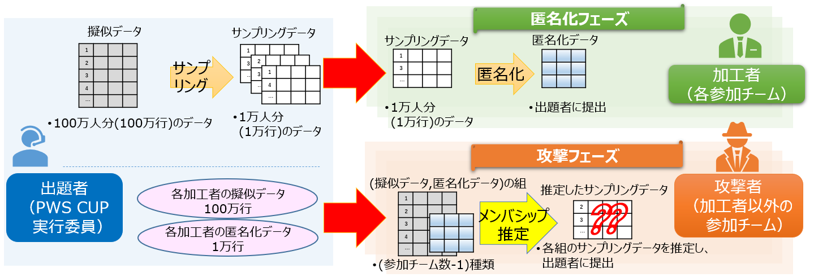

PWS Cup 2020

What' new
- 2020/02/18(火) 本ページを作成
- 2020/07/29(水) ルール案の概要を作成
- 2020/08/07(金) エントリー受付を開始しました
- 参加規程をご確認の上、エントリーフォームより登録をお願いします
- 2020/08/19(水) 08/26(水) 17:00-19:00に、ルール説明会(@WebEX)を行います
- ページ下部の「PWS Cup 2020 スケジュール」をご確認ください
- 2020/08/26(水) ルール説明会(@WebEX)を行いました
- 説明会で利用したルール詳細資料はこちらです
PWS Cup 2020 匿名メンバシップ推定コンテスト AMIC ルール概要
匿名メンバシップ推定コンテスト "AMIC" ("Anonymity against Membership Inference" Contest)を開催します。
ルール詳細資料はこちらです。

- コンテストの流れ
- 出題者(運営)は、参加チーム毎に「擬似データ」を生成する。擬似データから10%抽出した「サンプリングデータ」を生成し、参加チームに配布する。
- 加工者(各参加チーム)は、「サンプリングデータ」を加工（匿名化）して作成した「匿名化データ」を提出する。「匿名化データ」が、指定された有用性基準を満たしていない場合は失格。
- 攻撃者(他の参加チーム)は、自分以外の全加工者の(擬似データ、匿名化データ)の組を受け取る。「匿名化データ」から「サンプリングデータ」を推定する。
- 採点
- 匿名化部門：各攻撃者が推定に成功した数の合計を加工者の減点とし、得点の高い加工者が勝利
- 攻撃部門：匿名化部門優勝者のサンプリングデータの推定により多く成功した攻撃者が勝利
- 最終順位の確定
- 予備戦と本戦の2つのフェーズを設けて、各フェーズでデータ配布・加工・攻撃・評価を実施する。
- 各フェーズでの採点結果を利用して最終順位を定める
主催
- 情報処理学会 コンピュータセキュリティ研究会 PWS実行委員会
PWS Cup 2020 スケジュール
スケジュールは予告なく変更することがあります。あらかじめご了承ください
- 2020/08/07(金) - 2020/08/26(水) エントリー受付
- 2020/08/26(水) ルール公開
- 08/26(水) 17:00-19:00に、PWS Cup 2020説明会をWebExで行います
- 説明会参加をご希望される方は、pwscup2020-info(at)iwsec.org 宛に、会議URLをお知らせする宛先用のメールアドレス(のリスト)をご連絡ください
- 資料は説明会終了後に公開します
- 2020/08/27(木) - 2020/09/18(金) 予備戦
- 2020/09/24(木) - 2020/10/20(火) 本戦
- 2020/10/27(火) CSS2020にて、最終結果発表
- 2020/10/27(火) CSS2020にて、各チームの加工・攻撃手法のポスターセッション
参加方法
- 参加規定のページをご確認ください。
プライバシーポリシー
- PWS Cup 2020 プライバシーポリシーをご確認ください。
公式Twitter
- PWSCUP公式Twitterで最新情報をお知らせしています。
お問い合わせ先
- PWS2020実行委員会 Cupワーキングループ
- pwscup2020-info(at)iwsec.org